FMIS Morocco
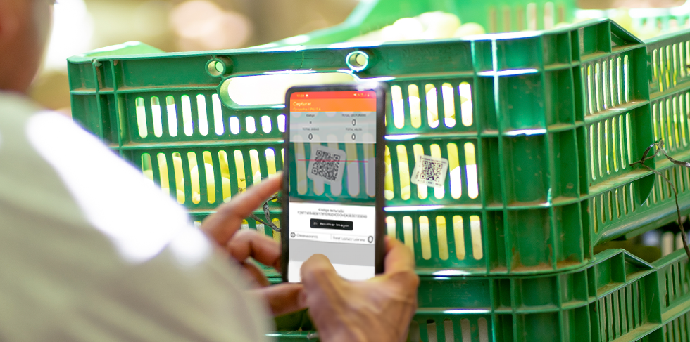
I am an IT professional with over 6 years of experience, specializing in providing technology solutions for agricultural enterprises.
Having a broad understanding of how IT and business work together to achieve organizational goals, covering applications, networks, infrastructure, and ERP systems.
Enjoying leading projects, collaborating with teams, and delivering solutions that drive efficiency and innovation in the agricultural sector.

Hortifrut
Support IT Senior Analyst /
As a Senior IT Support Analyst, I ensured the stability, performance, and reliability of IT services while providing advanced
technical support to end users.
I worked closely with business teams to resolve complex issues, improve service quality
and support operational continuity.
Support IT /
As an IT Support, I provided technical assistance to end users and ensure the smooth operation of IT systems, devices, and applications.
Nton Advisory
IT Consultant /
As a Senior Application Administrator, I am responsible for ensuring the availability, performance, security, and reliability of business-critical applications.
FMIS Morocco

MS Azure
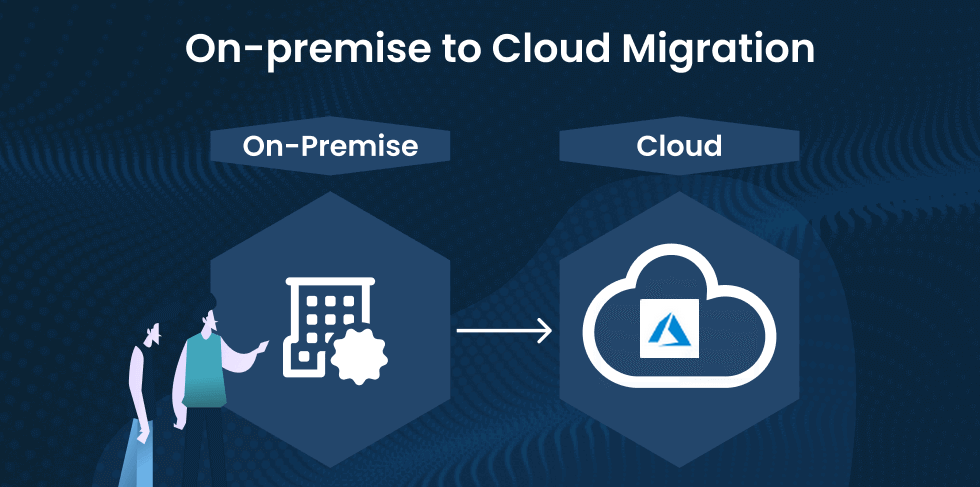
FMIS Senegal
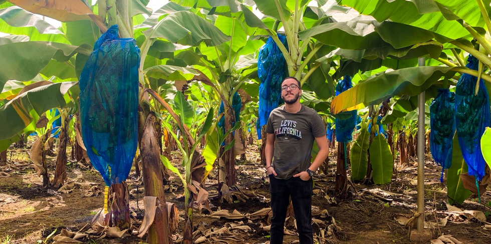
Agricultural CCTV Project
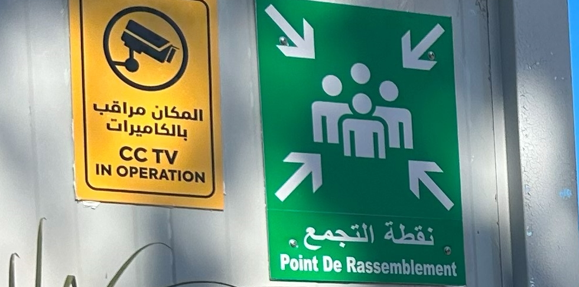
ONESAP Morocco
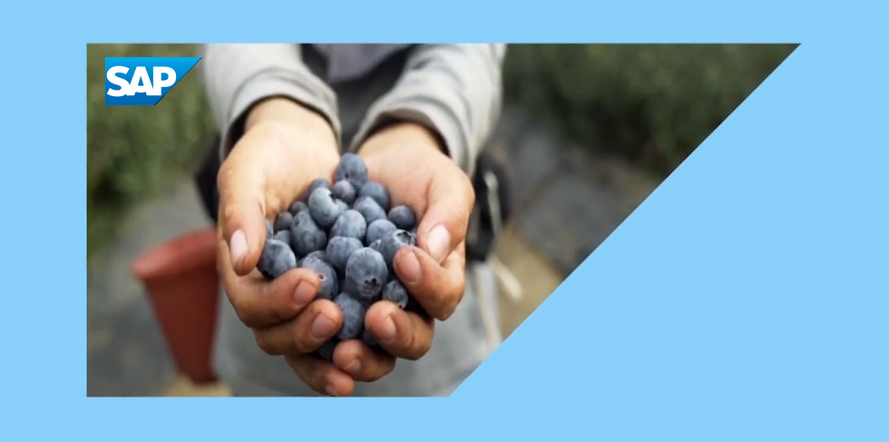
Smart Farm Infrastructure
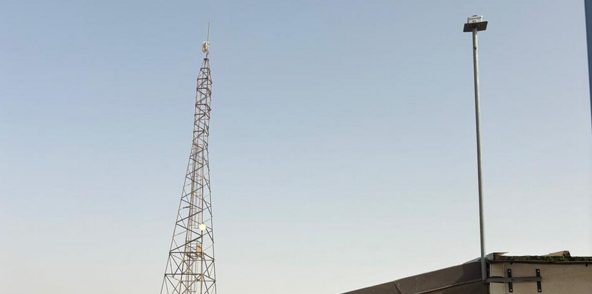

ENSA TANGER
Professional Master’s Degree :
Computer Engineering, Cybersecurity and Decisions -
Professional Bachelor’s Degree : Networks and Systems -

INSMONTIC TANGER
Diploma of Specialized Technician : IT Networks -
FMIS Morocco
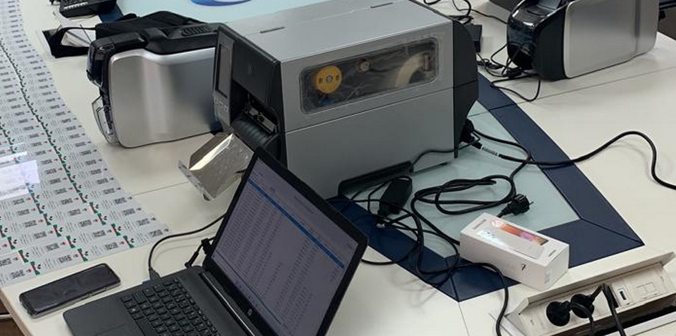
Farm Management Information System is an agricultural traceability and field management application and platform used to monitor agricultural operations, collect field data, and improve visibility across the production process.
My responsibilities included system configuration, end-user support, mobile device setup and troubleshooting, printer configuration, report support, and ensuring smooth adoption of the platform by operational teams
MS Azure Cloud Migration
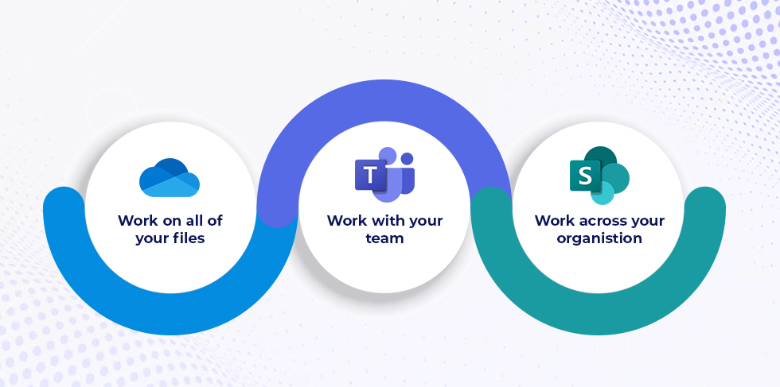
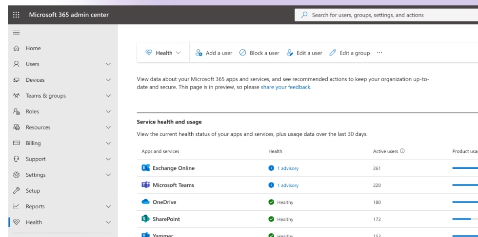
This project involved migrating the organization's IT services and user data from an on-premises infrastructure to the Microsoft Azure cloud platform.
The objective was to modernize the IT environment and provide users with access to cloud-based productivity tools.
As part of the project team, I participated in the migration of user data from local file servers to cloud storage solutions, the creation and configuration of SharePoint sites,
and the migration of email accounts, mailboxes, and historical data from the on-premises email system to Microsoft 365. I also assisted with user provisioning, identity management through Microsoft Entra ID,
and end-user support to ensure a smooth transition with minimal disruption to business operations.
.
FMIS Senegal

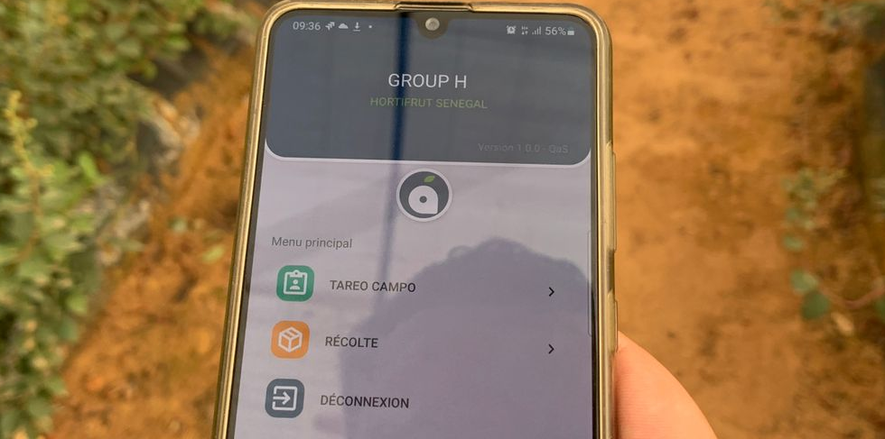
Farm Management Information System is an agricultural traceability and field management application and platform used to monitor agricultural operations, collect field data, and improve visibility across the production process.
My responsibilities included application configuration, forming the local IT support Team about mobile device setup and troubleshooting, printer configuration, report support and ensuring smooth adoption of the platform by operational teams.
Agricultural CCTV Project
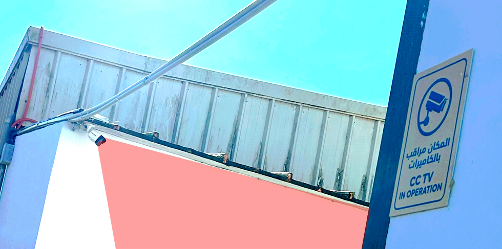
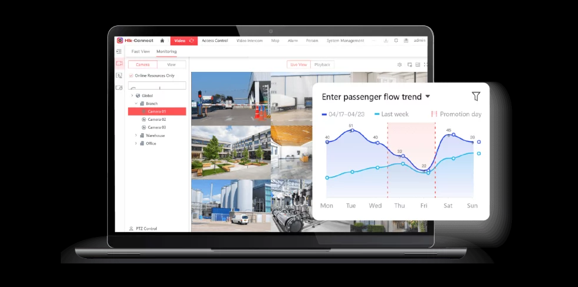
This project involved designing and deploying a CCTV surveillance system across seven agricultural farms.
I conducted a detailed study to determine optimal camera placement and designed the supporting infrastructure for
all camera installations.
I supervised the work of the CCTV system provider, ensuring quality and compliance
with the design plan. Additionally, I configured the Network Video Recorder (NVR) and integrated it with IP cameras,
set up network connectivity, and implemented a secure access platform with role-based permissions to provide
restricted access to each site depending on user roles.
ONESAP Morocco
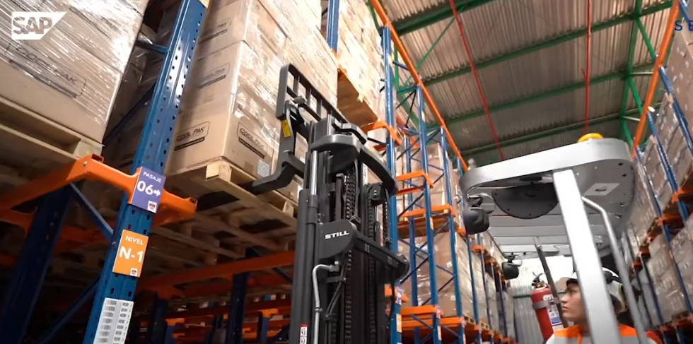
ONESAP is a global SAP S/4HANA transformation initiative aimed at consolidating multiple country operations onto a unified ERP platform.
As part of the Morocco deployment, i contributed to the successful implementation and post-go-live support of SAP S/4HANA,
ensuring business continuity and user adoption.
My responsibilities included training and supporting key users in (SD)/(MM) modules, coordinating with Masterdata team to identify and resolve data quality issues,
and assisting business users throughout the transition process.
I also played a key role in the integration
between SAP S/4HANA and Agritracer, ensuring harvest and production data were accurately transferred
to SAP for inventory and stock management.
Following the go-live phase, I served as Level 1/2 SAP Support, troubleshooting complex issues,
analyzing business processes, implementing corrective actions, and coordinating with senior
SAP consultants for advanced functional and technical escalations.
Smart Farm Infrastructure
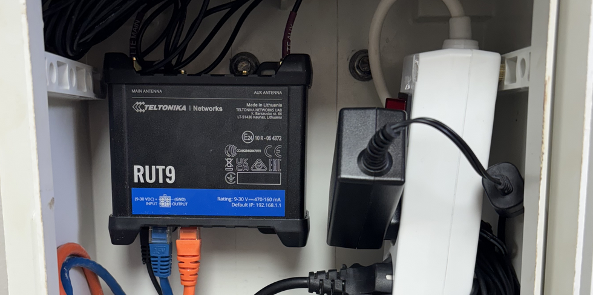
This project focused on designing and implementing a robust, high-performance network infrastructure for smart farms in Morocco.
The study involved a comprehensive analysis of all available connectivity options in the region, followed by a strategic plan
to enhance network reliability and support the seamless operation of all farm applications with minimal downtime.
The infrastructure leveraged industrial-grade equipment, including Teltonika Networks devices, Fortinet firewalls,
Cambium Networks PTP links, managed switches, and Wi-Fi access points. A detailed network plan was developed,
incorporating VLAN segmentation, SD-WAN architecture, and firewall integration to ensure secure, efficient,
and scalable connectivity across the farm environment.
In addition, a centralized cloud management platform was deployed to monitor and manage all network devices, providing real-time visibility into the status and performance of the entire infrastructure.